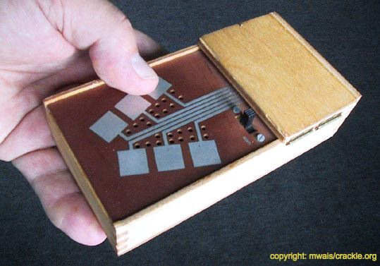

Kraakdoos/Crackle Box Workshop (2023)
Kraakdoos (Crakle Box) is an electronic-noise-feedback-synth-instrument designed by Michel Waisvisz of STEIM in the 1970s. It is played by directly touching selected points in the circuit thereby becoming part of the circuit and completing a feedback loop to generate sounds.
During PIF camp 2023, I led a workshop with fellow participants to make our own Crackle Box. This resulted in many enthusiastic (late-night) touch-play-jam explorations, an interactive installation, as well as a serendipitous ultrasonic crackle box for playing with bat detectors.


The extended crackle box installation:
The crackle-o-bat performance (ft. Tina Tonagel & Rodolfo Acosta Castro):